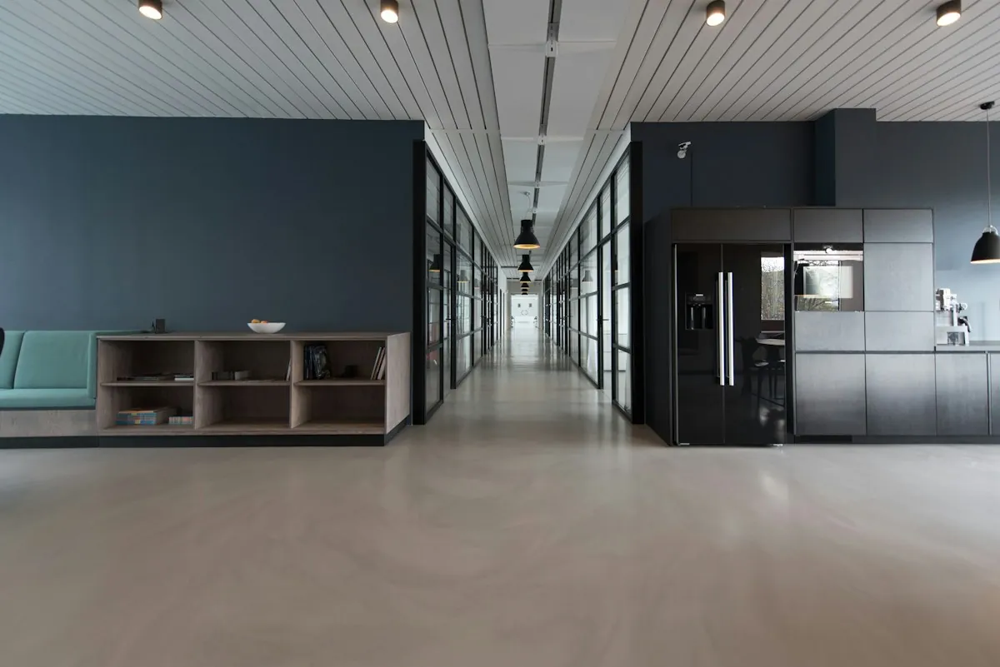

1.1
Direito Empresarial
Assessoria a empresas e empresários em decisões que afetam a operação, a estrutura e a continuidade do negócio.
Estrutura da empresa · Responsabilidade de administradores · Reorganizações
Advocacia empresarial e patrimonial Cuiabá · MT
Assessoria jurídica para empresas, sócios e famílias em decisões que envolvem negócios, patrimônio e continuidade.
Projeto conceitual de portfólio. O escritório, os profissionais, os números de OAB, os contatos e o endereço são fictícios.
Muitas das decisões jurídicas mais importantes acontecem antes de qualquer conflito: na estruturação de uma sociedade, na assinatura de um contrato, na reorganização de um patrimônio ou na preparação de uma sucessão.
São momentos em que uma análise cuidadosa permite enxergar riscos e alternativas com mais clareza. Por isso, o trabalho do escritório começa pela compreensão do contexto.
Como o negócio funciona, quais pessoas e bens estão envolvidos e que efeitos cada escolha pode produzir com o tempo. Só depois vem a resposta.
1.1
Assessoria a empresas e empresários em decisões que afetam a operação, a estrutura e a continuidade do negócio.
Estrutura da empresa · Responsabilidade de administradores · Reorganizações
1.2
Estruturação e revisão de relações societárias e contratuais, com atenção aos interesses envolvidos e aos efeitos futuros.
Contrato social · Acordo de sócios · Entrada e saída de sócios · Contratos empresariais
1.3
Organização jurídica do patrimônio e preparação da sucessão, de forma estruturada e individualizada.
Organização patrimonial · Holding familiar · Testamento e doação · Inventário
1.4
Atuação em disputas empresariais e patrimoniais que exigem análise de risco, estratégia processual e acompanhamento próximo.
Disputas societárias · Disputas contratuais · Conflitos patrimoniais · Vias consensuais
Três escolhas rápidas preparam uma mensagem objetiva para o escritório. Nada é enviado sem a sua confirmação.
Entender o negócio, as pessoas envolvidas, os bens em questão e os objetivos.
Identificar riscos jurídicos, alternativas possíveis e suas consequências.
Construir uma abordagem adequada à realidade e ao momento do cliente.
Participar da implementação e dos desdobramentos, quando necessário.

O modelo de atuação privilegia relações de longo prazo. Isso significa compreender o contexto antes de oferecer uma resposta, discutir alternativas com transparência e tratar cada demanda de acordo com a sua complexidade.
Para quem atuamos
Sócio
Direito Empresarial, Societário e Contratos.
OAB/MT 00.000
Sócia
Planejamento Patrimonial e Sucessório e Contencioso Estratégico.
OAB/MT 00.000
Profissionais e números de inscrição fictícios, usados apenas para fins de portfólio.
Não. Além da atuação empresarial, o escritório trabalha com questões patrimoniais e sucessórias de pessoas e famílias, especialmente quando o patrimônio pessoal tem relação com uma atividade empresarial.
Sim. Boa parte da atuação é consultiva e preventiva: a análise jurídica acontece antes da tomada de decisão.
Sim. A atuação contratual inclui elaboração, revisão e análise de instrumentos ligados às áreas atendidas pelo escritório.
O primeiro contato serve para entender, de forma inicial, a natureza da demanda e verificar a possibilidade de atendimento. Quando for o caso, é agendada uma reunião para aprofundar o contexto.
Sim. Conforme a natureza da demanda, o atendimento pode ser presencial ou por meios digitais.
Não. O conteúdo tem caráter apenas informativo. Cada situação depende de fatos e documentos específicos, que precisam ser analisados por um advogado.
Contato
Se a sua empresa, sociedade ou patrimônio está diante de uma decisão relevante, entre em contato. O escritório avalia a demanda e informa se e como pode atender.
Iniciar pré-atendimentoEndereço, telefone e e-mail fictícios deste projeto conceitual.